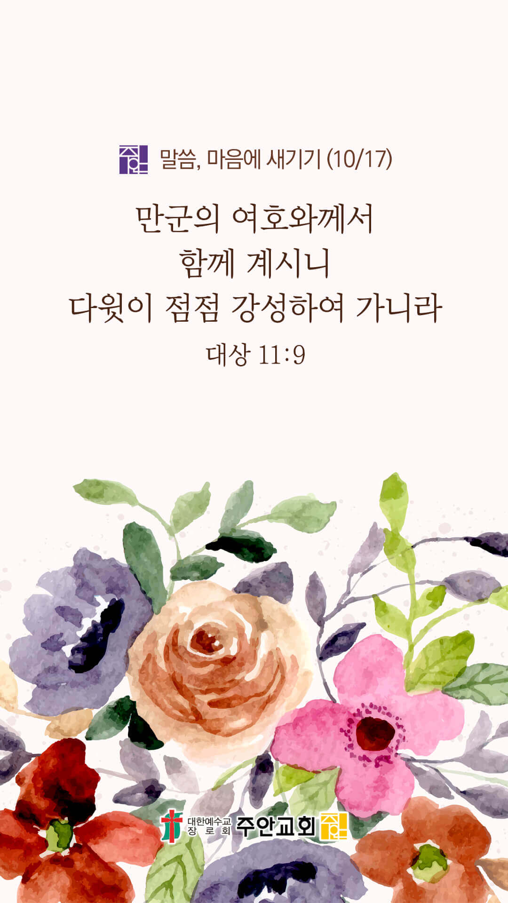

기도실 안내
2021년 10월 17일 (일)
- 온라인 기도실은 온 회중이 함께 주님 앞으로 나아가는 자리입니다
- 30분 정도 여유를 가지고 하시기 바랍니다
- 말씀과 묵상, 찬양과 기도로 나아갑니다
- 배경 음악이 나올 수 있습니다 볼륨을 조절해주세요
준비가 되셨으면 아래의 버튼을 눌러주세요
할렐루야
내 영혼아 여호와를 찬양하라
시 146:1
- 가사를 묵상하며 읽습니다
나 지금은 비록 땅을 벗하며 살지라도
내 영혼 저 하늘을 디디며 사네
내 주님 계신 눈물 없는 곳
저 하늘에 숨겨둔 내 소망 있네
보고픈 얼굴들 그리운 이름들 많이 생각나
때론 가슴 터지도록 기다려지는 곳
할렐루야
내 영혼아 여호와를 찬양하라
시 146:1
- 가사를 묵상하며 읽습니다
내 아버지 넓은 품 날 맞으시는
저 하늘에 쌓아둔 내 소망 있네
주님 그 나라에 이를 때까지
순례의 걸음 멈추지 않으며
어떤 시련이 와도 나 두렵지 않네
주와 함께 걷는 이 길에
할렐루야
내 영혼아 여호와를 찬양하라
시 146:1
하늘 소망 by Sea Of Hope
위의 찬양이 끝나면 말씀읽기를 눌러주시면 됩니다
주의 말씀은 내 발에 등이요
내 길에 빛이니이다 (시119:105)
오늘의 말씀입니다
음악 소리가 크면 조절하시기 바랍니다

마음의 묵상
대상 11:9
“만군의 여호와께서 함께 계시니 다윗이 점점 강성하여 가니라”
1. 다윗이 점점 강성해진 비결이 무엇이라고 말씀하나요?
2. 다윗과 함께 하신 하나님이 당신과도 함께 하실 줄 믿으시나요?
3. 함께 하시는 하나님을 외면하고 있는 지인들을 위해 이 시간 잠시 기도합시다
주님, 저들과 함께 하소서
회개, 삶의 방향을 바꾸는 결정
회피했던 저를 용서하시고 전할 수 있는 용기를 주소서
“너는 말씀을 전파하라
때를 얻든지 못 얻든지 항상 힘쓰라
범사에 오래 참음과 가르침으로
경책하며 경계하며 권하라”
- 디모데후서 4:2 -
3분 정도 회개하며 주님 앞에 나아갑니다
사슴이 시냇물을 찾기에 갈급함 같이
시 42:1
- 다음의 말씀을 소리 내어 읽습니다
디모데후서 4장 3-5절
3 때가 이르리니 사람이 바른 교훈을 받지 아니하며 귀가 가려워서 자기의 사욕을 따를 스승을 많이 두고
4 또 그 귀를 진리에서 돌이켜 허탄한 이야기를 따르리라
5 그러나 너는 모든 일에 신중하여 고난을 받으며 전도자의 일을 하며 네 직무를 다하라
나라와민족을 위한 복음
1. 나라와 민족을 복음으로 변화시켜주소서
능력의 하나님,
정치적으로 예민한 이때에 주님께서 이 나라를 친히 다스려주시고, 바른 정치가 이뤄지게 하시며,
코로나로 인해 침체된 서민경제를 회복시켜 주시고, 사람들의 마음밭이 복음을 받아들이는 옥토가 되게 하소서.
간절한 마음으로 3분 정도 기도합시다
주안교회의 사명
2. 주안교회가 영혼구원의 사명을 끝까지 감당하게 하소서
사랑의 주님,
주안교회의 당회가 하나님의 지혜로 교회를 잘 섬기게 하시고, 목회자들이 성령 충만함으로 영혼 구원과 양육의 사명을 잘 감당하게 하시며,
교회의 모든 리더들에게 지혜의 영을 부어주셔서 주님이 원하시는 일들을 행하게 하소서.
간절한 마음으로 3분 정도 기도합시다
주님의 주관하심
3. 올라인 예수사랑큰잔치를 친히 주관하여 주소서
만유의 주 하나님,
올라인 예수사랑큰잔치를 능력의 손으로 붙잡아 주시어 사탄마귀 일절 틈타지 못하게 하시고,
행사의 모든 순간들에 함께 하셔서 사람의 지혜가 아닌 전적인 하나님의 능력으로 본 천국잔치를 주관하여 주소서.
간절한 마음으로 3분 정도 기도합시다
주님의 인도하심
4. 올라인 예수사랑큰잔치의 과정과 결과를 지켜주소서
보혜사 성령하나님,
코로나 상황으로 인해 전도에 어려움이 있지만 성도들이 자원하는 심령으로 전도할 대상들을 품고 기도하게 하시고,
그 입술과 마음과 행동을 주장하시어 효과적인 전도가 이뤄지게 하소서.
간절한 마음으로 3분 정도 기도합시다
말씀에 순종
5. 저희가 말씀에 순종하게 하소서
하나님 아버지,
아버지께서 가라지를 뽑지 않으시는 것이 우리를 위함이요 우리를 사랑하시기 때문이라는 사실을 깨닫게 하옵소서.
우리들이 세상의 가라지 때문에 원망하지도 실망하지도 분노하지도 않게 하시고, 추수할 때(종말의 때)가 있음을 기억하며
그 때를 소망하게 하소서. 그리고 바로 지금이 은혜 받을 만한 때요 구원의 복음 씨앗을 뿌려야 할 때임을 깨닫고
생명의 씨앗을 열심히 뿌려 그 열매를 주님께 올려드리는 참된 알곡 성도들이 되게 하소서.
간절한 마음으로 3분 정도 기도합시다
감사의 기도
- 오늘 기도를 인도하신 주님께 감사를 올려드립니다
- 아래의 구절을 읽고 주님께 감사의 마음을 올려드립시다
“그들이 너를 치나 너를 이기지 못하리니
이는 내가 너와 함께 하여
너를 구원할 것임이니라
여호와의 말이니라”
- 예레미야 1장 19절 -
고요한 가운데 잠시 침묵하시기 바랍니다
파송, 세상을 향하여
- 오늘의 온라인 기도를 마쳤습니다
기도를 들으신 주님께서 평안히 가라 하십니다
주님께서 우리와 함께 하시니 두려울 것이 없습니다
새벽을 깨우며
- 새벽기도회 안내입니다